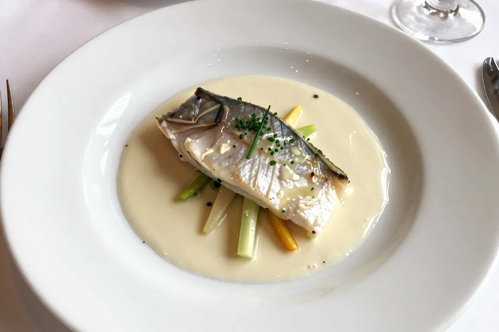

Лёгкая кухня Мишеля Герара для спа-отеля. В каждом блюде мало калорий, но тарелка трёхзвёздочная: пар вместо масла, фромаж блан и овощное пюре вместо сливок и муки, небольшая порция.

Главная идея
Блюдо может быть бедным жиром и сахаром и всё же оставаться высокой кухней, если повар берёт точную технику и свежие продукты вместо масла и сливок.
Принципы дизайна
Готовьте на пару, в кур-бульоне или в закрытой сковороде с ложкой воды, а не в масле.
Связывайте соус фромаж блан, йогуртом, овощным пюре или уваренным бульоном; откажитесь от муки, сливок и яичного желтка.
Считайте энергию каждого блюда и держите полное меню в пределах 500–800 ккал.
Приправляйте травами, лимоном, уксусом и специями, чтобы соли и жира можно было держать мало.
Не кладите сахар в соус: сладость берите из фруктов и овощей.
Подавайте каждое блюдо небольшой порцией на большой белой тарелке, чтобы в трапезе осталось много перемен.
Выкладывайте с аккуратностью трёхзвёздочной кухни: соус лужицей под едой, одна трава сверху.
Сохраняйте ясный вкус каждого продукта и не прячьте его за диетической этикеткой.